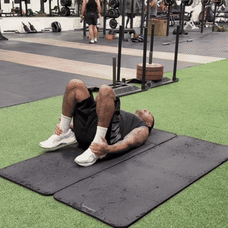
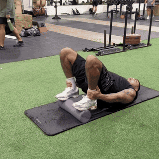
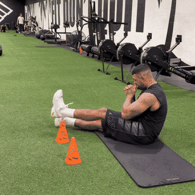
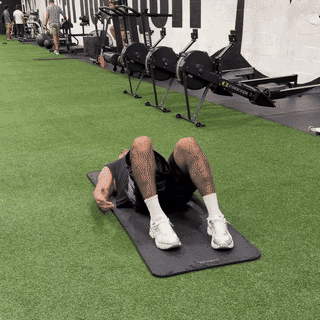
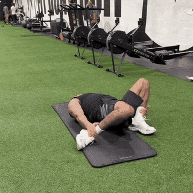
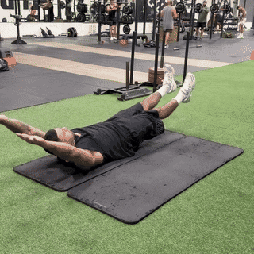
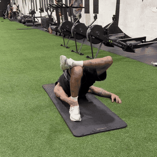
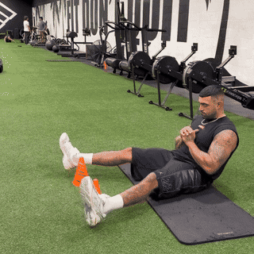
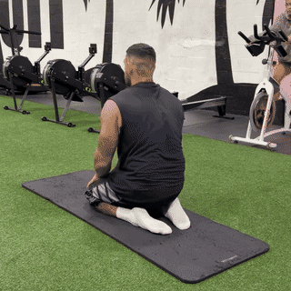
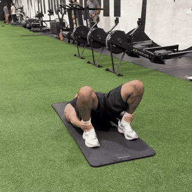

Lying on your back, grip both ankles and pull the knees to the chest. Sets passive tension through the ankle and hip while creating length.

Heels on a foam roller, hands gripping the ankles, hips driven up. The roller lengthens the calves and Achilles at end range while the bridge loads the posterior chain.

Seated with legs extended, lift the heels and hold active dorsiflexion over a visual clearance (cones/water bottles). Builds ankle range under active tension.

Supine, one hand grips the same-side ankle and drives the bent knee down to the mat. Opens hip rotation and ankle freedom together.

Feet pulled close to the glutes, grip both ankles, knees bowed outward. End-range hip extension while holding deep ankle dorsiflexion.

Full-length hollow body — arms overhead, legs extended, lower back glued to the mat. Builds the anti-extension core control that makes the mobility real.

Supine, pull one ankle dynamically toward the hip in a quad-opener position while holding head and upper back down.

Seated, hands anchored behind, straight legs lifting over a visual barrier. Builds hip-flexor and lower-ab control at end range.

Kneeling sit-back into hero pose. Length for the quads, shins, and ankle dorsiflexion with a tall spine.

Maximal ankle-grip bridge — heels drive, hands on ankles, glutes squeezed at the top. Peak posterior-chain engagement to end the flow.